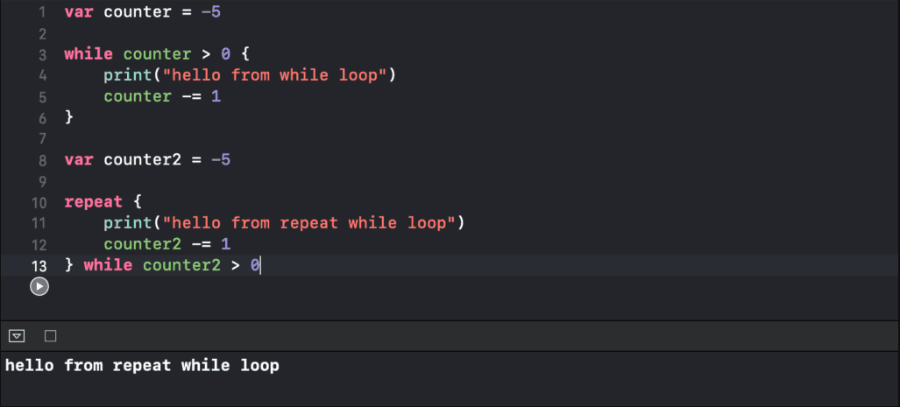
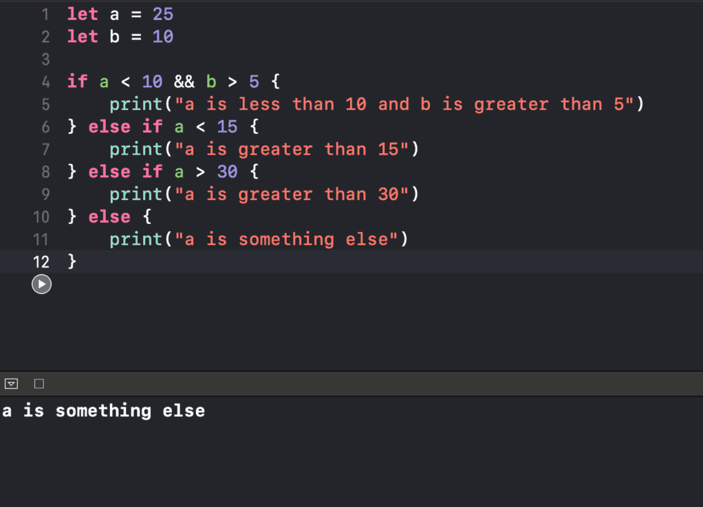
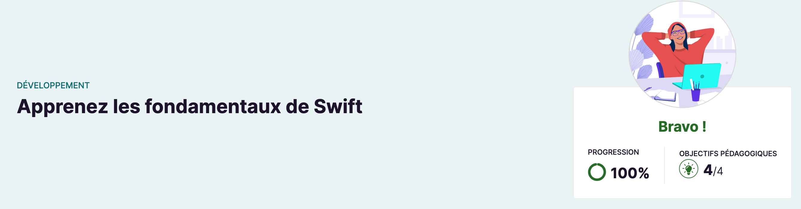

Certification Swift
Certification Swift
Dans cette formation, j'ai appris comment utiliser Swift, le langage de programmation développé par Apple pour crée des applications IOS.
Lien internet : Open Classrooms Swift
Exemple de boucle while en utilisant Swift

Exemple de plusieurs conditions if else en Swift

